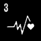
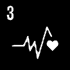
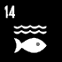
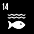

AI-Assistert Reparering
En praktisk hjelper som gjør reparasjon enkelt og tilgjengelig

Vår Løsning
Vi prøver å lage en programvare som kan veilede og hjelpe deg i alle aspekter av elektronisk reparasjon. Den vil bruke en moderne kunstig intelligens (AI) for å analysere bildedata i sanntid.
Den kommuniserer med serverne våre for å gjenkjenne objekter og elektriske komponenter fra den virkelige verden, og gir brukeren visuelle tips og veiledninger om hvordan de trygt og riktig håndtere dem (se personvern for eventuelle bekymringer).
| Relevans | Passelighet | Mulighet for løsning |
|---|---|---|
| Norge er #1 når det gjelder elektronisk avfall per innbygger.[6] Nordmenn er flinke til å resirkulere elektronikk, men kan gjøre betydelige forbedringer når det gjelder reparasjon av elektronikk istedenfor å kjøpe nye produkter. | Løsningen vår er enkel å bruke på grunn av utvidet virkelighet brukergrensesnittet, som gir brukeren en presis guide for hvert trinn som kreves for å reparere vanlig elektronisk utstyr. Bruk av teknologien er tilgjengelig på de fleste smarttelefoner og vr-utstyr samt smart-briller. | Trening og utvikling av kunstig intelligens er en iterativ prosess. kunstig intelligens trenger gigabytes av data for å lære de forskjellige problemene som elektroniske enheter kan ha, samt deres respektive løsninger. kunstig intelligens vil vokse organisk over tid, under kontrollert testing. |

Bærekraftsmål 13: Stoppe klimaendringene
Vi tror at ved å styrke enkeltpersoner til å reparere og konstruere elektronikk i stedet for å kjøpe og kaste, kan vi bidra til å redde miljøet. Les mer om FNs bærekraftsmål Her. Vi tror løsningen vår kan hjelpe med noen andre mål også, som #4, #5, #8, #9, #10, og #12.

 



 



Smart Briller
Briller har lenge vært et symbol for intelligens, men nå vil vi bokstavelig talt sette intelligens i briller. Et par briller med to fremovervendte kameraer og laserteknologi lar oss fange virkeligheten i foran brukeren, og legge bilder over glasset som er nyttige for brukeren når han utfører reparasjoner.